Panel de Control 1
Este panel de control es una pantalla táctil dividida en varias áreas desde las que se pueden realizar las siguientes acciones:
- Controlar las luces, señales y sonidos del buque.
- Controlar las amarras, anclas y remolques del buque.
- Controlar la orientación del visual.
- Panel de Control de Maquinillas (opcional).
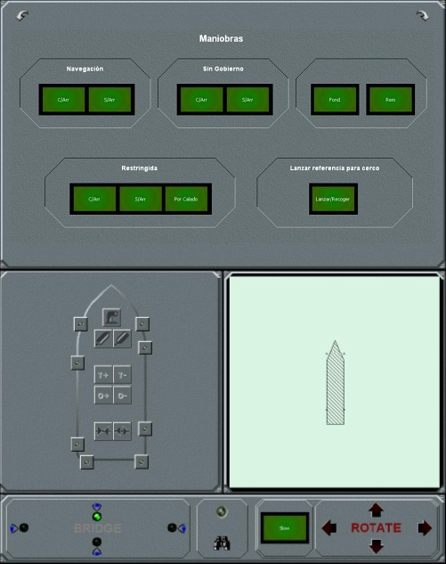
Control de luces, señales y sonidos
El área de control de luces, señales y sonidos se compone de cuatro paneles intercambiables (Maniobras, Luces, Señales y Sonidos). El intercambio entre un panel y otro se realiza pulsando cualquiera de las flechas situadas en los ángulos superiores.
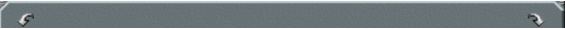
Mediante el Panel de Maniobras, el operador puede seleccionar cualquiera de las maniobras del buque y pulsando un sólo botón establecer las luces, señales y sonidos correspondientes a la maniobra seleccionada.
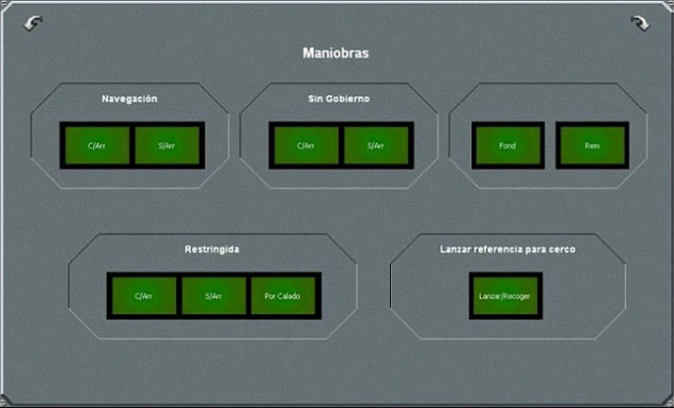
Cada botón establece la señalización de maniobra que se especifica en la siguiente tabla:
| Botón | Luces (maniobra) | Señales | Sonidos |
| Navegación C/Arr | NAVEGACION | Ninguna | Con Arrancada |
| Navegación S/Arr | NAVEGACION | Ninguna | Sin Arrancada |
| Sin Gobierno C/Arr | SIN-GOBIERNO-CON-ARRANCADA | bola, bola | Maniobra Restringida |
| Sin Gobierno S/Arr | SIN-GOBIERNO-SIN-ARRANCADA | bola, bola | Maniobra Restringida |
| Restringida C/Arr | RESTRINGIDA-CON-ARRANCADA | bola, bicónica, bola | Maniobra Restringida |
| Restringida S/Arr | RESTRINGIDA-SIN-ARRANCADA | bola, bicónica, bola | Maniobra Restringida |
| Restringida Por Calado | RESTRINGIDA-POR-CALADO | cilindro | Maniobra Restringida |
| Fond | FONDEADO | bola a proa bola en popa (si hay mástil en popa) |
Fondeado |
| Rem | REMOLCADO | bicónica a proa | Remolcado |
En el área Lanzar referencia para cerco, este panel incluye un botón con la leyenda Lanzar/Recoger para lanzar y recoger un objeto de referencia. Este objeto se usa en la pesca de cerco para localizar la zona de lanzamiento de la red.
Cuando se presiona el botón Lanzar/Recoger, se ilumina y es sistema crea un objeto que se puede ver en la cartografía del instructor y en el visual. El objeto aparece por la popa del buque y se mueve con la corriente del mar. Cuando el botón se presiona de nuevo, se apaga y el objeto desaparece.
El Panel de Luces muestra la lista de las luces del buque. Cada luz se representa con un led que se enciende o se apaga indicando el estado real de la luz en el buque.
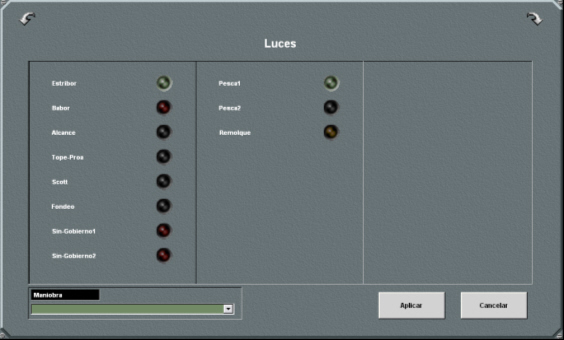
Para encender una luz, hay que tocar directamente el led correspondiente (que debe estar apagado), de esta manera el led se ilumina (con el color que corresponda según el tipo de luz).
Para apagar una luz se procede de igual manera que para encenderla, pero actuando sobre un led iluminado.
También es posible encender varias luces a la vez utilizando el campo Maniobras. Al desplegar esta campo aparece un listado con todas las maniobras posibles, seleccionando cualquiera de ellas, se enciende el conjunto de luces que indican la ejecución de la maniobra elegida y se apaga el resto de las luces que estuvieran encendidas. Las maniobras que se pueden seleccionar son:
- NAVEGACION-CON-ARRANCADA
- NAVEGACION-SIN-ARRANCADA
- SIN-GOBIERNO-CON-ARRANCADA
- SIN-GOBIERNO-SIN-ARRANCADA
- RESTRINGIDA-CON-ARRANCADA
- RESTRINGIDA-SIN-ARRANCADA
- RESTRINGIDA-POR-CALADO
- FONDEADO
- REMOLCADO
Una vez que se han encendido o apagado las luces en la ventana, si se pulsa el botón Aplicar los cambios realizados se hacen efectivos en el buque y si se pulsa el botón Cancelar se descartan los cambios.
Cuando en el panel de Maniobras se pulsa el botón de una maniobra, el panel de Luces se actualiza mostrando las luces correspondientes a la maniobra seleccionada.
El Panel de Señales contiene la lista de todas las señales que se pueden añadir a un mástil, y la lista de las señales izadas en cada mástil del buque (hasta 4 mástiles).
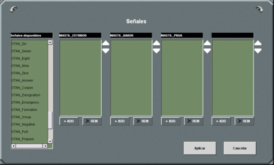
Para añadir una señal a un mástil, hay que seleccionar cualquiera de las señales que aparecen en el área de Señales Disponibles (tocando directamente sobre ella) y pulsar el botón ADD del mástil.
Para eliminar una señal de un mástil, hay que seleccionar cualquiera de las señales que aparecen en el área del mástil y pulsar el botón REM correspondiente a dicho mástil.
Una vez que se han establecido las señales en la ventana, si se pulsa el botón Aplicar los cambios realizados se hacen efectivos en el buque y si se pulsa el botón Cancelar se descartan los cambios.
Cuando en el panel de Maniobras se pulsa el botón de una maniobra que requiere señales en los mástiles, el panel de Señales se actualiza mostrando las señales correspondientes a la maniobra seleccionada.
El Panel de Sonidos contiene dos grupos de botones, desde los que se controlan las señales acústicas que puede emitir el buque. El primer grupo son señales no repetitivas y el segundo señales repetitivas
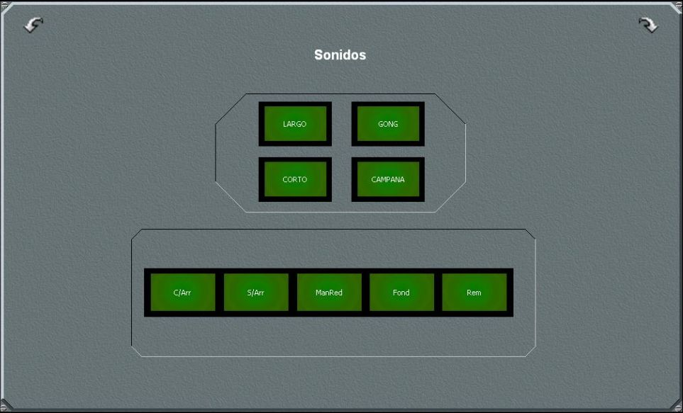
Al tocar los botones del grupo de señales no repetitivas, es decir los botones Largo, Corto, Gong o Campana, se emite un único sonido del tipo correspondiente.
Al tocar cualquiera de los botones del grupo de señales repetitivas, el botón se ilumina y se emite la combinación de señales acústicas prevista para la condición establecida (ver tabla adjunta), según el reglamento COLREG 72, y se repetirá con la frecuencia prevista en dicho reglamento hasta que se toque de nuevo el botón y se apague, eliminando así la condición establecida.
| Botón | Condición |
| C/Arr | Con Arrancada |
| S/Arr | Sin Arrancada |
| ManRed | Maniobra Restringida |
| Fond | Fondeado |
| Rem | Remolcado |
Si estando establecida una condición, se toca el botón correspondiente a otra condición distinta, automáticamente se elimina la condición anterior y se establece la nueva.
Al aplicar la Regla 35 de la COLREG 72 para determinar las señales acústicas emitidas, se tiene en cuenta de forma automática si la eslora del buque controlado es mayor o menor de100 metros.
Cuando en el panel de Maniobras se pulsa el botón de una maniobra que requiere señales acústicas, el panel de Sonidos se actualiza iluminándose el botón correspondiente a la maniobra seleccionada.
Control de amarras, anclas y remolques
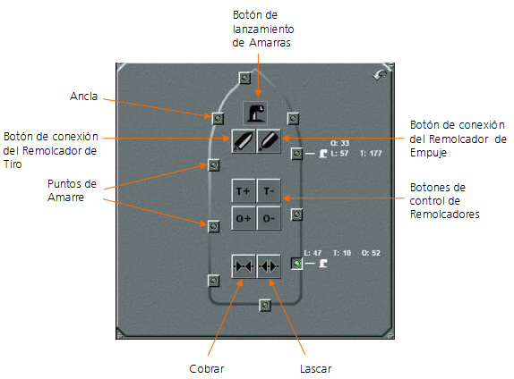
En este panel se representa, sobre la silueta del buque, los puntos de amarre a bordo y las posiciones de las anclas. Aunque ambos se representan con el mismo símbolo, al pasar el cursor sobre cada punto se muestra una etiqueta que indica si se trata de un punto de amarre o un ancla.
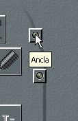 |
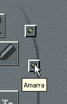 |
Para seleccionar un punto de amarre o un ancla basta tocar el punto correspondiente. El punto seleccionado se ilumina y se activan los botones de manipulación de amarras, anclas y remolcadores. Estos botones permiten llevar a cabo las distintas acciones asociadas al punto de amarre: largar o cobrar amarra, conectar o desconectar remolcadores y largar o izar anclas, y lascar o cobrar los cabos de los remolcadores.
No se pueden seleccionar varios puntos de amarre o anclas simultáneamente, cada vez que se selecciona un punto de amarre o ancla, los botones de manipulación actúan sobre el punto seleccionado.
Control de Amarras
Para largar amarras es necesario que el buque esté situado cerca de una zona de amarre (dique o costa), una vez situado, hay que seguir el siguiente procedimiento.
- En el Panel de Vista de Pájaro, se sitúa el Hook en el punto de amarre en tierra.
- En el Panel de Control de Anclas, Amarras y Remolcadores se selecciona uno de los puntos de amarre disponibles en el buque. Al pulsarlo, el botón se ilumina y se activan los botones de control de amarras y remolcadores, y los botones Lascar y Cobrar.
- Se pulsa el botón de lanzamiento de Amarras (representado por un noray). Al pulsarlo se larga una amarra desde el punto seleccionado en el buque hasta el punto marcado en tierra y junto al punto de amarre se presenta un icono de Noray y los datos de Longitud (L:), Tensión (T:) y Orientación (O:) de la amarra largada.
- Pulsado el botón Lascar, la longitud de la amarra aumenta y junto al botón del punto de amarre y el icono de Noray se presenta el icono de lascar que indica que se está aflojando el cabo de amarre.
- Pulsado de nuevo el botón Lascar, se detiene el largado del cabo de amarre.
- Pulsando el botón Cobrar, la longitud de la amarra disminuye y junto al botón de punto de amarre y el icono de Noray se presenta el icono de cobrar que indica que se está recogiendo el cabo de amarre.
- Pulsado de nuevo el botón Cobrar, se detiene la recogida del cabo de amarre.
- Para quitar la amarra, se selecciona el punto y a continuación se pulsa el botón de lanzamiento de Amarras (noray). Al pulsarlo, desaparecen los datos de Longitud, Tensión y Orientación de la amarra y el icono del Noray. También desaparece la línea que representa la amarra en el panel de Vista de Pájaro.
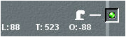
Esta amarra aparece representada por una línea en el panel de Vista de Pájaro.

La longitud de la amarra se mantiene constante mientras no se pulsen los botones de Cobrar y Lascar. La tensión y orientación pueden variar en función del movimiento del buque.
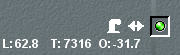
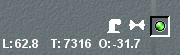
Nota: El simulador permite que se puedan amarrar los buques en cualquier punto aunque no esté situado en tierra.
Control de Anclas
Para controlar un ancla se pulsa uno de los botones de Ancla. Al pulsarlo, el botón se ilumina y se activan los botones Lascar y Cobrar.
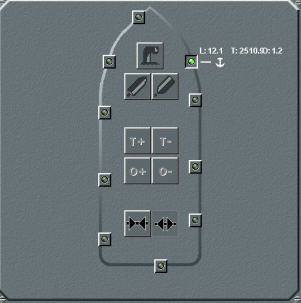
Para tirar el ancla, pulsa el botón Lascar y trascurrido un tiempo, junto al punto de ancla se presenta el icono de Ancla, el icono de lascar (que indica que el ancla está cayendo) y los datos de Longitud (L:), Tensión (T:) y Orientación (O:) del ancla lanzada.
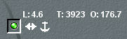
Mientras se mantenga pulsado el botón se Lascar, se continúa largando el ancla. Al pulsar de nuevo el botón de Lascar deja de largarse, manteniéndose constante la longitud de cadena largada.
Para levar el ancla, se pulsa el botón de ancla correspondiente y a continuación se pulsa el botón Cobrar. La longitud de la cadena va disminuyendo, y junto al botón y el icono de ancla se presenta el icono de cobrar que indica que se está recogiendo la cadena.
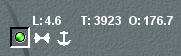
Cuando se ha recogido toda la cadena, desaparecen los iconos y los datos de longitud, tensión y orientación.
Control de Remolcadores
Nota: Los puntos de conexión a los remolcadores son los mismos que los puntos de amarre del buque.
El buque se puede conectar a remolcadores de tiro y remolcadores de empuje. Los remolcadores de tiro se conectan mediante un cabo que une el buque al remolcador, el remolcador tira de este cabo arrastrando consigo al buque. Los remolcadores de empuje no necesitan cabo se unen directamente al buque y lo empujan.
Los remolcadores de empuje sólo están disponibles para los buques con plataforma de 6GDL.
Para la conexión del buque a un remolcador se requiere la presencia de otro buque que actúe como remolcador y que esté situado a una distancia y demora que permitan iniciar la maniobra de remolcado.
La distancia máxima para iniciar la maniobra es un dato que puede variar de un buque a otro dependiendo de la plataforma que se le haya asignado.
Los ángulos de demora permitidos se establecen en el fichero de configuración y se aplican por igual a todos los buques.
Una vez situados los buques en la posición correcta, para conectar el buque a un Remolcador de tiro hay que seguir el siguiente procedimiento.
- En el panel de Vista de Pájaro, se sitúa el Hook sobre el buque remolcador.
- En el Panel de Control de Anclas, Amarras y Remolcadores se selecciona uno de los puntos de amarre disponibles en el buque. Al pulsarlo, el botón se ilumina y se activan los botones de control de amarras y remolcadores, así como los botones Lascar y Cobrar.
- Se pulsa el botón de conexión con el Remolcador de tiro. Al pulsarlo se conecta el punto seleccionado en el buque con el remolcador y junto al punto de amarre se presenta el icono de Remolcador de tiro y los datos de Longitud (L:), Tensión (T:) y Orientación (O:) del cabo.
- Igual que con las amarras largadas, el operador podrá Lascar o Cobrar, para modificar la longitud del cabo.
- El operador puede aumentar o disminuir tanto la tensión ejercida por el remolcador, como la orientación en la que ejerce dicho tensión. Para ello debe seleccionar el punto de amarre al remolque y actuar sobre los pulsadores de Tensión+, Tensión–, Orientación + y Orientación–.
- Para desconectar el remolque, se selecciona el punto y a continuación se pulsa el botón de conexión con el Remolcador de tiro. Al pulsarlo, desaparecen los datos de Longitud, Tensión y Orientación del cabo y el icono del Remolcador. También desaparece la línea que representa el cabo en el panel de Vista de Pájaro.
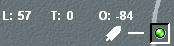
El cabo de remolque aparece representado por una línea en el panel de Vista de Pájaro.
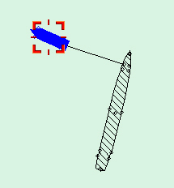
Nota: Si el remolcador seleccionado es un buque de 6 GDL estos botones no funcionan ya que, en ese caso, el remolcador se controla con su propia maquinaria.
Para conectar el buque (de 6GDL) a un Remolcador de empuje hay que seguir el siguiente procedimiento.
- En el panel de Vista de Pájaro, se sitúa el Hook sobre el buque remolcador.
- En el Panel de Control de Anclas, Amarras y Remolcadores se selecciona uno de los puntos de amarre disponibles en el buque. Al pulsarlo, el botón se ilumina y se activan los botones de control de amarras y remolcadores, así como los botones Lascar y Cobrar.
- Se pulsa el botón de conexión con el Remolcador de empuje. Al pulsarlo se conecta el punto seleccionado en el buque con el remolcador y junto al punto de amarre se presenta el icono de Remolcador de empuje y los datos de Tensión (T:) y Orientación (O:).
- El operador puede incrementar o decrementar tanto la tensión ejercida por el remolcador, como la orientación en la que ejerce dicho tensión. Para ello debe seleccionar el punto de amarre al remolque y actuar sobre los pulsadores de Tensión+, Tensión–, Orientación + y Orientación–.
- Para desconectar el remolque, se selecciona el punto y a continuación se pulsa el botón de conexión con el Remolcador de empuje. Al pulsarlo, desaparecen los datos de Tensión y Orientación y el icono del Remolcador.
Control de la orientación visual
Desde el área de control de la orientación visual se puede cambiar la posición y orientación de la de la cámara.
Al tocar cualquiera de los cuatro leds de la zona BRIDGE, el led se ilumina y la cámara se orienta a proa, popa, babor o estribor, de manera que si seleccionamos el led situado arriba, en el visual aparece la imagen del escenario visto desde el puente con una cámara orientada al frente y si seleccionamos el led situado a la derecha, abajo o a la izquierda, en el visual aparece la imagen del escenario visto desde el puente con una cámara orientada a estribor, popa o babor respectivamente.
Al tocar el led de Zoom situado encima del icono de prismáticos, el led se ilumina y la imagen visual del canal central se presenta ampliada en forma de vista a través de prismáticos. Al tocar de nuevo el led, se apaga y la imagen vuelve a aparecer en la forma de vista normal
Por último las cuatro flechas de la zona ROTATE controlan la orientación horizontal (yaw) y vertical (pitch) de la cámara:
- Flecha arriba - La cámara gira hacia arriba (aumenta el pitch).
- Flecha abajo - La cámara gira hacia abajo (disminuye el pitch).
- Flecha derecha - La cámara gira hacia la derecha (aumenta el yaw).
- Flecha izquierda - La cámara gira hacia la izquierda (disminuye el yaw).
Cada vez que se toca una flecha la cámara gira 5 grados (o el ángulo de giro que se haya configurado) en el sentido de la flecha.
El botón Slow de puede encender para disminuir la velocidad del giro, de manera que mientras está encendido, cada vez que se toca una flecha los giros de la cámara se realizan de grado en grado.
Panel de control de maquinillas
Cuando la consola de propulsión y gobierno incluye una maquinilla de pesca ,el Panel de Control 1 incluye un panel de control de maquinillas en el que el operador puede ver los datos de la maquinilla.
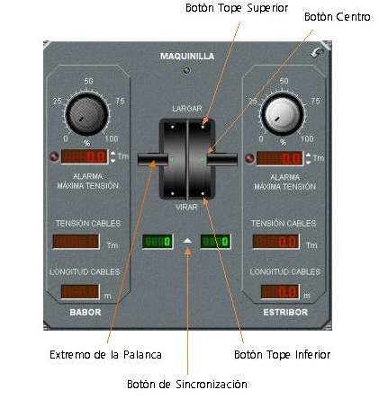
Este panel se comparte espacio con el panel de Control de Anclas, Amarras y Remolcadores. El intercambio entre un panel y otro se realiza pulsando la flecha situada en el ángulo superior derecho.
En este panel están las palancas de control de las maquinillas del buque de pesca y los indicadores y controles de tensión del cable, cuyo funcionamiento se describe a continuación.
Control de las Maquinillas
La maquinilla de pesca generalmente se controla con las palancas hardware situadas en la consola, pero este panel incluye unas palancas software que también se pueden usar.
Para desplazar las palancas hay que colocar el cursor sobre el extremo, pulsar el botón izquierdo del ratón, arrastrar hacia arriba o hacia abajo y soltar en la posición elegida. Pulsando los botones situados en la base de la palanca, esta se desplaza automáticamente a la posición marcada por el botón (tope superior, centro y tope inferior). Pulsando el botón de sincronización situado bajo la base de las palancas, ambas palancas se mueven solidariamente.
Los campos situados bajo cada una de las palancas, actualizan en cada momento la posición de la palanca en una escala de -100 a 100 pasando por 0 en la posición central.
Para largar la red al agua desde la cubierta del buque, es necesario accionar ambas palancas hasta el tope en la dirección de largar y para subirla de nuevo a cubierta se accionan igualmente ambas palancas en la dirección de virar.
En el arte de Arrastre con Pareja, para largar la red es necesario, además, que el buque pareja se encuentre a estribor del buque principal y a una distancia inferior a la que se establece como distancia máxima en el fichero de configuración.
Una vez que la red está en el agua, en las artes de Arrastre se puede controlar, de forma independiente, la velocidad de largado y/o recogida de los cables de babor y estribor, desplazando la palanca de babor o estribor respectivamente a posiciones intermedias. Cuando la palanca se sitúa en el tope en la dirección de largar, el cable se larga a la velocidad del buque, conforme se desplaza la palanca a posiciones cercanas al centro la velocidad de largado disminuye hasta que deja de largarse cable en la posición central. De la misma forma cuando la palanca se sitúa en el tope en la dirección de virar, el cable se recoge a una velocidad fija que se establece en Preparación y conforme se desplaza la palanca hacia el centro esta velocidad disminuye hasta que se hace cero en el centro.
En las artes de Palangre y Cerco, las dos palancas se mueven solidariamente, con independencia de que está activa o no la función de sincronización de palancas. En estas artes, para recoger la red, además de situar la palanca en la posición de virar, es necesario que el buque se encuentre en la posición correcta, próximo a la primera boya y que la maniobra de largado de boyas (palangre) o el cierre de la jareta (cerco) haya concluido. Las posiciones intermedias de las maquinillas no tienen ningún efecto ya que el largado se efectúa siempre a la velocidad del buque.
El área de máxima tensión de las maquinillas, situada en la parte inferior del panel, muestra la máxima tensión de cables que soporta la maquinilla. Si la tensión de los cables supera esta tensión, la maquinilla deja de funcionar y se enciende el indicador luminoso de avería situado en esta misma área.
Control de las Tensiones de los Cables
El panel dispone de dos módulos de control de tensiones uno para el cable de babor y otro para el de estribor. Para las artes que sólo tienen un cable sólo está activo el módulo de estribor.
Cada módulo contiene los siguientes elementos:
- Selector de Ajuste de Máxima Tensión del Cable: permite establecer el nivel de tensión que hará saltar la alarma de máxima tensión del cable. Se puede seleccionar un valor entre 0 y la tensión máxima soportada por el cable (ver el apartado Preparación de la Base de Datos/ Preparación de Modelos Básicos/ Aparejos de Pesca/ Cables en el Manual de Instructor).
- Indicador digital de Máxima Tensión del Cable: es un indicador digital de cinco cifras en el que se muestra máxima tensión del cable seleccionada con el selector.
- Indicador de Alarma de Máxima Tensión: es un indicador luminoso que se enciende cuando la tensión del cable supera la tensión establecida cómo máxima.
- Indicador digital de Tensión del Cable: es un indicador digital de cinco cifras en el que se muestra la tensión del cable en toneladas.
- Indicador digital de Longitud del Cable: es un indicador digital de cuatro cifras en el que se muestra la longitud del cable largado en metros.
Para seleccionar la máxima tensión, el operador debe situar el cursor sobre el selector analógico en la posición elegida (de 0 a 100% del máximo) y a continuación pulsar y soltar el botón izquierdo del ratón.
El valor marcado en el selector analógico aparece en el campo situado debajo. Para un ajuste fino del dato, se usan las flechas situadas a la derecha de este campo. Al pulsar la flecha arriba el dato se incrementa en una décima y al pulsar la flecha abajo el dato disminuye en una décima.